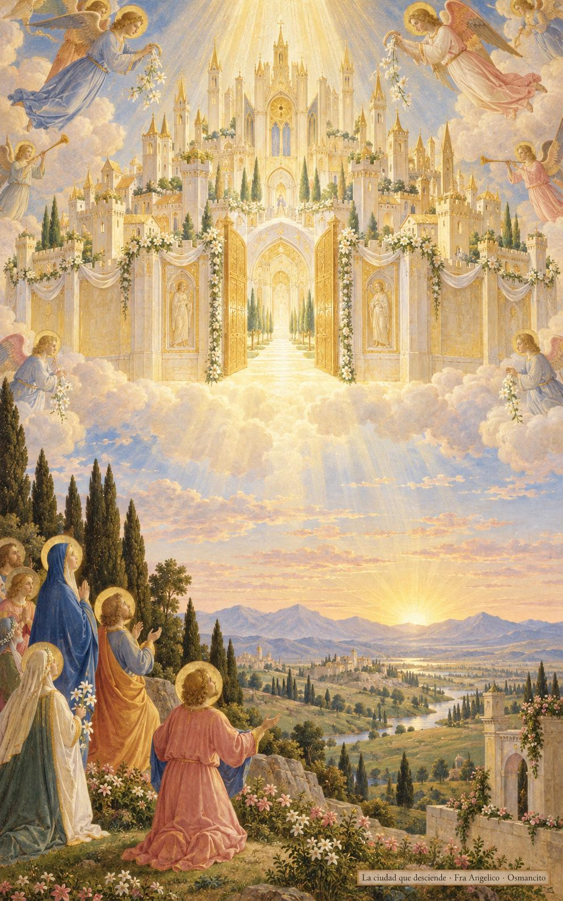
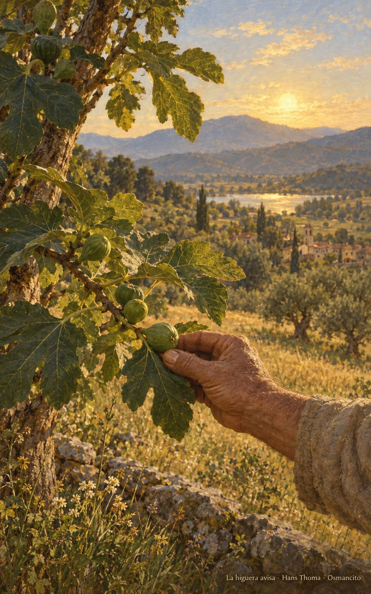

27 de noviembre de 2026
¡Buenos días!
Palabras que no pasan
48
Podrán dejar de existir el cielo y la tierra, pero mis palabras no dejarán de cumplirse.
Lucas 21,33. Fuente
Que no temamos el juicio del trono, donde cada uno responde por sus obras, porque el dragón queda encadenado y la muerte será arrojada al fuego. Que anhelemos los atrios del Señor como el gorrión que encuentra casa cerca de sus altares. Que leamos la higuera que da fruto y sepamos que el Reino está cerca: aunque pasen el cielo y la tierra, sus palabras no pasarán, y veremos la ciudad nueva descender como novia.

- La ciudad santa desciende del cielo engalanada como una novia sobre una tierra nueva: Apocalipsis 21, vi un cielo nuevo y una tierra nueva, y el mar ya no existía.

- La mano reconoce los primeros frutos de la higuera en la mañana que anuncia el verano: Lucas 21, cuando vean que suceden estas cosas, sepan que el Reino de Dios está cerca.
¡Feliz viernes 27 de noviembre!
😊🙋♂
© 2026 Osmancito